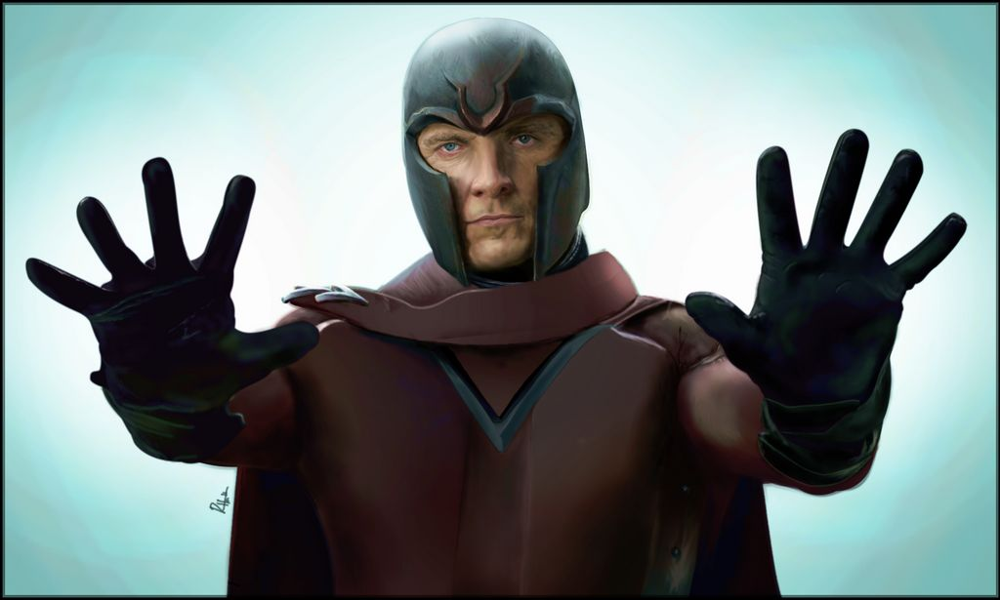

Magneto
Max Eisenhardt,[1] aka "Magneto", the "Master of Magnetism"[15] is a powerful mutant with the ability to generate and control magnetic fields. Magneto regards mutants as evolutionary superior to humans and rejects the possibility of peaceful human-mutant coexistence; he aims to conquer the world to enable mutants, whom he refers to as Homo superior, to replace humans as the dominant species.
Max was born and raised in Nuremberg, Germany by a middle class Jewish family. While attending a local school he became attracted to a young Romani girl named Magda, the daughter of the school cleaner. Max would do things such as create necklaces and excel in sporting events to gain her attention. While returning from school one day, Max encountered a Nazi rally and found his uncle Erich beaten and wearing a sign saying that he had shamed a German woman (as he was Jewish and she was not). Not long after, at a school event, Max won a javelin competition to impress Magda, and the following day was accused of cheating (following the belief that a Jewish boy could not exceed his classmates). Max was told to either give up his medal or recreate the throw with a "regulation" javelin. After winning the competition a second time, Max was again accused of cheating, expelled, and beaten by the other children
While in Auschwitz, Max was reunited with Magda and continued to smuggle food and supplies to her. Max saved Magda from the gas chambers and then from execution; as the Sonderkommando revolted, the two of them escaped together. For several years, Max and Magda lived in a Carpathian mountain village, and eventually they were married. They had a daughter, Anya/p>
X-Men and the Brotherhood
Professor Xavier's original team of X-Men thwarted Magneto's first act of genetic terrorism in his war with humanity, the takeover of the Cape Citadel missile base.[15] When they next clashed, Magneto overthrew the government of Santo Marco, setting himself up as absolute ruler, and led his original Brotherhood of Evil Mutants,[10] which included Wanda and Pietro, now known as the Scarlet Witch and Quicksilver. Not until years later would Magneto learn that they were allegedly his children. After the X-Men liberated Santo Marco, Magneto kidnapped Angel and the X-Men followed to Asteroid M. Asteroid M was destroyed in the battle with the X-Men, when Scarlet Witch sabotaged a button, designed to kill the X-Men
Powers and Abilities
Magneto was previously thought of being an Alpha-mutant,[177] but is
currently considered to be an Omega Level Mutant.[164] He has been
stated on several occasions to have been one of the most powerful
mutants,[178][179][92][180] he has also been described for several
times as the most powerful mutant,[181][182][183][179] Earth's most
powerful super villain,[15][10] even the single most powerful being
on the face of the Earth.[6] He possesses tremendous amounts of
power, which is, for all practical purposes, limitless.[184] The
upper limits of Magneto's power can't be surpassed in any measurable
fashion.
Intelligence: A mastermind, Magneto is a genius in various
scientific fields. He is an expert in genetic engineering and
mutation. He has created artificial living beings, mutated humans in
order to give them superhuman powers, instilled genetic
mind-control, created adult clones of human beings, and manipulated
the genetic structures of those clones during their development. His
discoveries in particle physics would revolutionize the field and
place him among the giants of scientific history if they were to be
revealed.
Last Days
After the events of World War Hate, Magneto found himself the leader of a band of mutant refugees on Genosha, who had just escaped the mutant concentration camps built by the Red Skull on the island.[134] He caught the attention of S.H.I.E.L.D., and surrendered to the authorities only to heavily damage the helicarrier from the inside and delete the agency's files on mutants.[135] Magneto was approached by Namor, who told him of the Incursions, an event in which two alternate universes collide with each universe's Earth as the point of impact. Namor was preparing to betray the Cabal and told Magneto about the Incursions because he believed that Magneto would do whatever possible to stop them